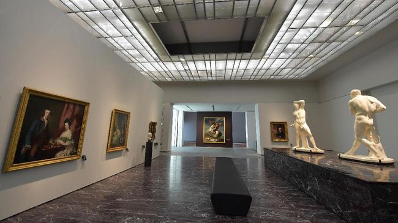
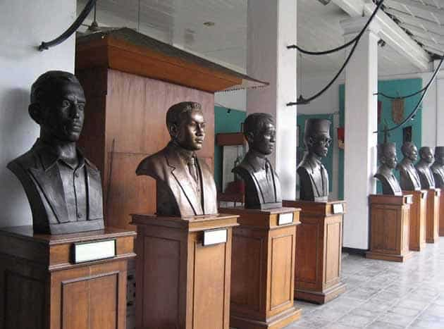
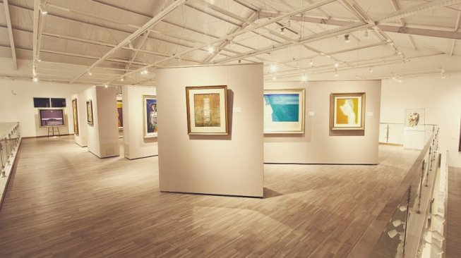
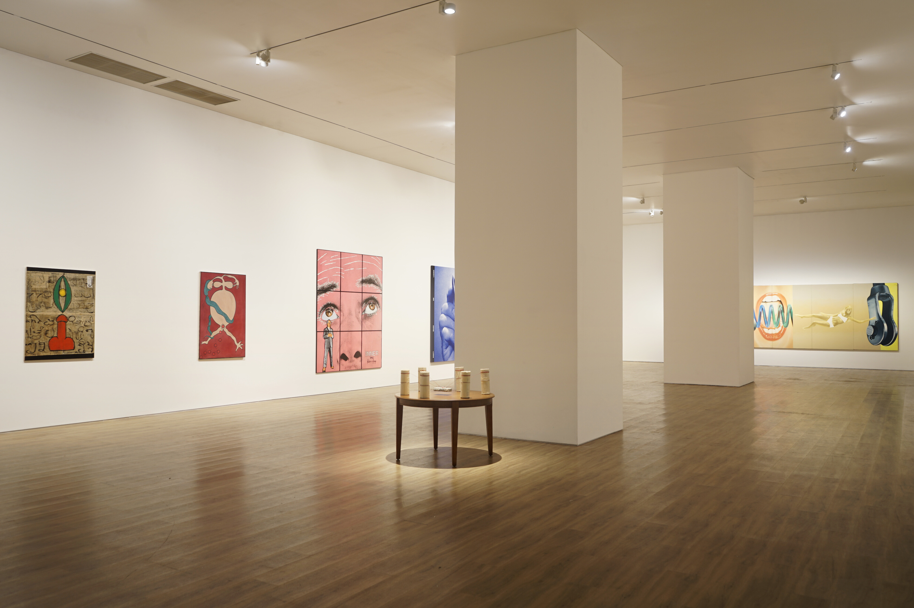
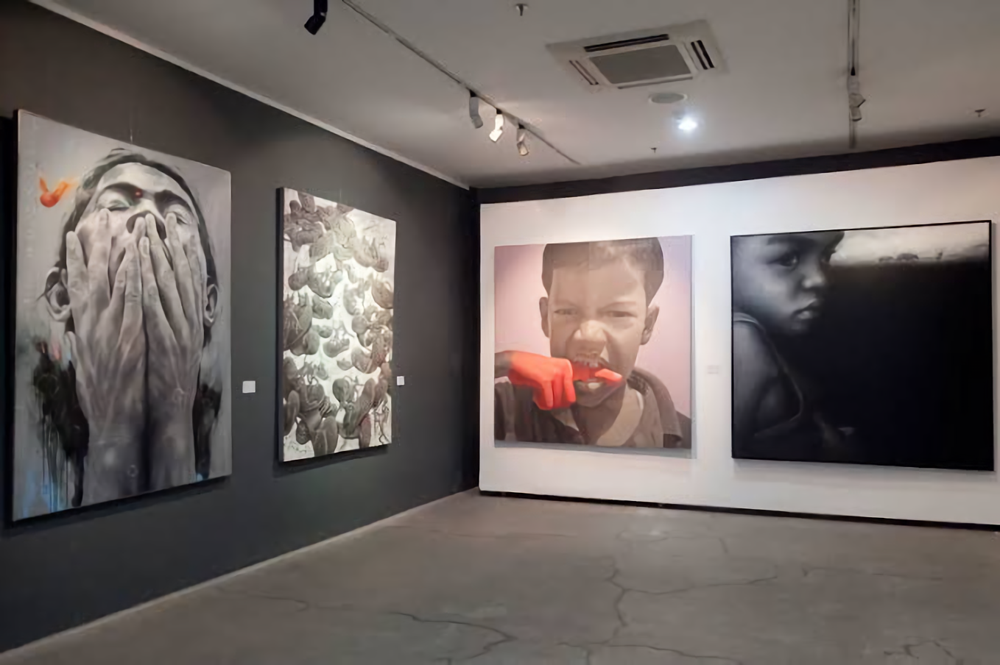
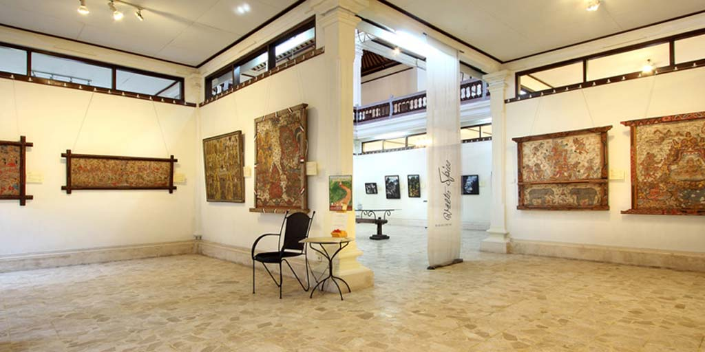

Museum Adalah Karya
Museum Ku
Seseorang telah membangun sebuah museum hujan yang megah di kota kenangan, demi menyimpan airmatanya sendiri.
Fasilitas
Fasilitas yang disediakan seperti Sewa Tempat, Pemandu Wisata, Layanan Manuskrip dan Perpustakaan.
Pengunjung bisa menikmati fasilitas yang ada dengan satu tiket saat dibeli di loket pembelian. Gedung Pameran Temporer adalah fasilitas Kegiatan Kebudayaan. Bagi sebagian orang museum identik dengan benda-benda diam yang tidak terjamah.
Galeri
Ini adalah kolesi dari Museum Ku.






MuseumKu:
"Saya lelah dengan museum, pemakaman seni."
MuseumKu:
"Saya lelah dengan museum, pemakaman seni."
MuseumKu:
"Saya lelah dengan museum, pemakaman seni."
MuseumKu:
"Saya lelah dengan museum, pemakaman seni."